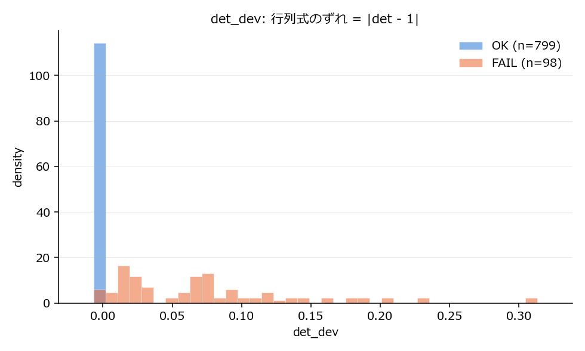
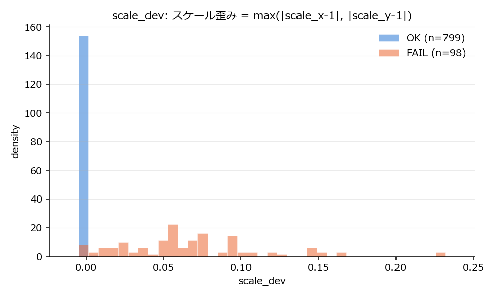
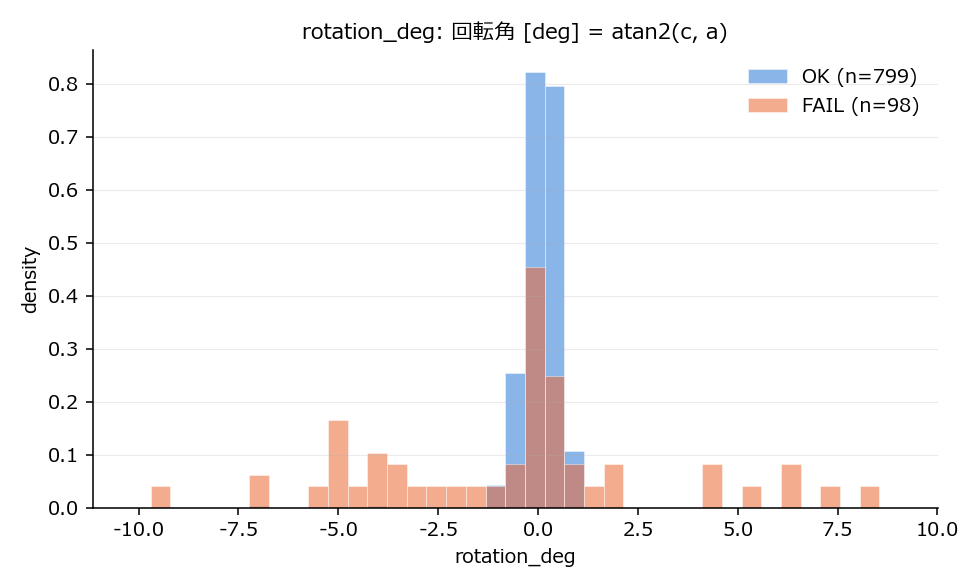
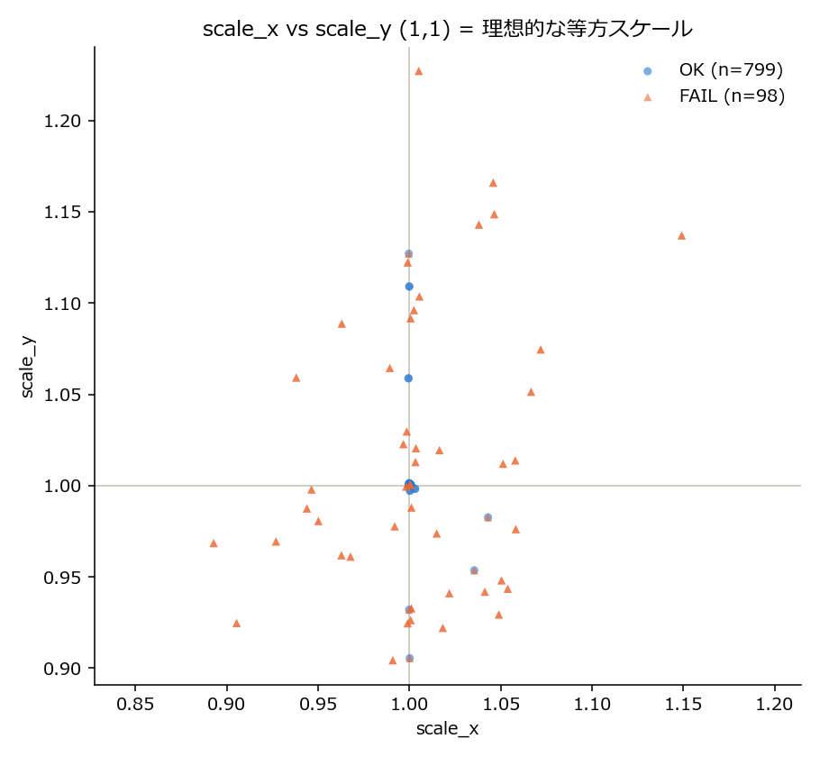

AffineParam(lens/stage画像の位置合わせアフィン変換)を使い、目視判定(check_quality.py)の代わりになる数値基準を探した結果
FAIL = ScanData\PatternMatchFailed\... に移動された(取得失敗と判断された)ディレクトリ、
OK = ScanData\ChkRes\*.txt で最終的に j:OK と判定され、現在も ScanData\<UTS|FTS>\... に残っているディレクトリ。
ディレクトリ単位では全 1350 件。
重要な前提: AffineParamはEvent(飛跡)ごとの値ではなく、同じPL・同じZone(物理走査エリア)を通る全Eventで完全に同一の値になることを確認した (例: FTS ECC4 PL064 Zone5 を通る Event00633・Event03933・Event06107・Event07277 は6つの数値が1ビットも違わず一致)。 そのため統計は「(ECC, scan_type, IMG/Ref, PL, AffineParamの値)が一意になるスキャン単位」に重複除去してから取っている。 重複除去後は 897 件(OK 799 件 / FAIL 98 件)。
| ecc | scan_type | category | OK | FAIL |
|---|---|---|---|---|
| 4 | FTS | IMG | 62 | 4 |
| 4 | FTS | Ref/IMG | 59 | 4 |
| 4 | UTS | IMG | 148 | 39 |
| 4 | UTS | Ref/IMG | 150 | 36 |
| 6 | FTS | IMG | 20 | 0 |
| 6 | UTS | IMG | 181 | 9 |
| 6 | UTS | Ref/IMG | 179 | 6 |
| 合計 | 799 | 98 |
アフィン行列の行列式が1からどれだけずれているかを見る、最もシンプルで強力な基準。
ほぼ同じ性能で scale_dev = max(|scale_x−1|, |scale_y−1|)(x/y方向の拡大率のずれ。
scale_x = sqrt(a²+c²), scale_y = sqrt(b²+d²))を使うルール
(scale_dev > 0.0031 なら FAIL、accuracy 0.982 / recall 0.929 / precision 0.91)も使える。
回転角(rotation_deg)は単独では検出率22.5%と弱いが、|rotation_deg| > 1度の場合は今回のデータで100%FAILだったため、
「回転が大きければ確実にFAIL」という補助フィルタとして使える。
一方、並進量(translation_mag、ステージ位置そのもの)はFAIL/OKで有意差がなく判定には使えない
―― これは想定通りで、手法の健全性を裏付ける結果でもある。
全データの中で、それぞれの集団の det_devの中央値に最も近い(極端な外れ値ではない)代表例を1件ずつ選び、計算過程を示す。
K:\NINJA\E71a\ManualCheck\ScanData\UTS\ECC6\IMG\Event03638\PL078\tomographic_images.json
AffineParam = [a, b, c, d, e, f] = [1.00076, -0.0181998, -0.0224863, 0.932618, -297575, 26733.3]
| 指標 | 計算式 | 数値 |
|---|---|---|
| scale_x | √(a²+c²) | 1.001 |
| scale_y | √(b²+d²) | 0.9328 |
| det | a·d − b·c | 0.93292 |
| det_dev | |det − 1| | 0.06708 |
| scale_dev | max(|scale_x−1|, |scale_y−1|) | 0.0672 |
| rotation_deg | atan2(c, a) | -1.287° |
判定: det_dev = 0.06708 > 0.0025 → FAIL(実際に PatternMatchFailed へ移動)
K:\NINJA\E71a\ManualCheck\ScanData\UTS\ECC6\IMG\Event08669\PL053\tomographic_images.json
AffineParam = [a, b, c, d, e, f] = [1.00015, -0.00262183, 0.00198384, 1.00051, -177051, -201071]
| 指標 | 計算式 | 数値 |
|---|---|---|
| scale_x | √(a²+c²) | 1.0002 |
| scale_y | √(b²+d²) | 1.0005 |
| det | a·d − b·c | 1.0007 |
| det_dev | |det − 1| | 0.0006688 |
| scale_dev | max(|scale_x−1|, |scale_y−1|) | 0.000517 |
| rotation_deg | atan2(c, a) | 0.1136° |
判定: det_dev = 0.0006688 ≤ 0.0025 → OK(実際に ChkRes で j:OK と判定)




| metric | outcome | n | mean | std | median | p05 | p95 | min | max |
|---|---|---|---|---|---|---|---|---|---|
| scale_dev = max(|scale_x-1|, |scale_y-1|) | OK | 799 | 0.001307 | 0.0089 | 0.0003999 | 0.0002168 | 0.0006317 | 7.851e-05 | 0.127 |
| scale_dev = max(|scale_x-1|, |scale_y-1|) | FAIL | 98 | 0.06791 | 0.04607 | 0.0605 | 0.001581 | 0.1492 | 0.0003437 | 0.2271 |
| det_dev = |det - 1| | OK | 799 | 0.001463 | 0.008554 | 0.0006688 | 0.000301 | 0.0009947 | 5.004e-05 | 0.1257 |
| det_dev = |det - 1| | FAIL | 98 | 0.07384 | 0.06584 | 0.06509 | 0.005741 | 0.2041 | 0.0006327 | 0.3065 |
| rotation_deg = atan2(c, a) [deg] | OK | 799 | 0.05984 | 0.4883 | 0.119 | -0.7406 | 0.6861 | -7.142 | 1.148 |
| rotation_deg = atan2(c, a) [deg] | FAIL | 98 | -0.5743 | 3.677 | -0.1763 | -5.89 | 6.398 | -9.314 | 8.17 |
| translation_mag = sqrt(e²+f²) [um] | OK | 799 | 1.675e+05 | 7.536e+04 | 1.744e+05 | 4.597e+04 | 3.023e+05 | 6556 | 3.347e+05 |
| translation_mag = sqrt(e²+f²) [um] | FAIL | 98 | 1.881e+05 | 7.303e+04 | 1.912e+05 | 5.875e+04 | 3.073e+05 | 2.031e+04 | 3.26e+05 |
| metric | rule | accuracy | precision | recall | tp | fp | fn | tn |
|---|---|---|---|---|---|---|---|---|
| scale_x | scale_x > 1.00065 => FAIL | 0.942 | 0.8966 | 0.5306 | 52 | 6 | 46 | 793 |
| scale_y | scale_y > 1.0013 => FAIL | 0.9331 | 0.8958 | 0.4388 | 43 | 5 | 55 | 794 |
| scale_dev | scale_dev > 0.00311137 => FAIL | 0.9822 | 0.91 | 0.9286 | 91 | 9 | 7 | 790 |
| det | det > 1.0013 => FAIL | 0.9331 | 0.88 | 0.449 | 44 | 6 | 54 | 793 |
| det_dev | det_dev > 0.00252129 => FAIL | 0.9844 | 0.9118 | 0.949 | 93 | 9 | 5 | 790 |
| rotation_deg | rotation_deg > 1.14762 => FAIL | 0.913 | 1 | 0.2041 | 20 | 0 | 78 | 799 |
| nonortho | nonortho > 1.43118e-05 => FAIL | 0.9398 | 0.9783 | 0.4592 | 45 | 1 | 53 | 798 |
| translation_mag | translation_mag > 334653 => FAIL | 0.8907 | nan | 0 | 0 | 0 | 98 | 799 |
det_dev > 0.002521 を records.csv(ディレクトリ単位)に適用した結果。全154件のうち、
実際の目視判定もFAILで一致するもの 139件、実際はOKなのに誤ってFAILと判定したもの 15件。
| ECC | scan_type | category | Event | PL | det_dev | 判定 |
|---|---|---|---|---|---|---|
| 4 | FTS | IMG | 08322 | 038 | 0.07669 | 一致 (FAIL) |
| 4 | FTS | IMG | 05414 | 049 | 0.1644 | 一致 (FAIL) |
| 4 | FTS | IMG | 11357 | 049 | 0.1644 | 一致 (FAIL) |
| 4 | FTS | IMG | 00633 | 064 | 0.006572 | 一致 (FAIL) |
| 4 | FTS | IMG | 03933 | 064 | 0.006572 | 一致 (FAIL) |
| 4 | FTS | IMG | 06107 | 064 | 0.006572 | 一致 (FAIL) |
| 4 | FTS | IMG | 07277 | 064 | 0.006572 | 一致 (FAIL) |
| 4 | FTS | IMG | 12037 | 064 | 0.01208 | 一致 (FAIL) |
| 4 | FTS | Ref/IMG | 08322 | 038 | 0.07669 | 一致 (FAIL) |
| 4 | FTS | Ref/IMG | 05414 | 049 | 0.1644 | 一致 (FAIL) |
| 4 | FTS | Ref/IMG | 11357 | 049 | 0.1644 | 一致 (FAIL) |
| 4 | FTS | Ref/IMG | 00633 | 064 | 0.006572 | 一致 (FAIL) |
| 4 | FTS | Ref/IMG | 03933 | 064 | 0.006572 | 一致 (FAIL) |
| 4 | FTS | Ref/IMG | 06107 | 064 | 0.006572 | 一致 (FAIL) |
| 4 | FTS | Ref/IMG | 07277 | 064 | 0.006572 | 一致 (FAIL) |
| 4 | FTS | Ref/IMG | 12037 | 064 | 0.01208 | 一致 (FAIL) |
| 4 | UTS | IMG | 01587 | 018 | 0.06978 | 一致 (FAIL) |
| 4 | UTS | IMG | 10208 | 018 | 0.03296 | 一致 (FAIL) |
| 4 | UTS | IMG | 10208 | 019 | 0.07786 | 一致 (FAIL) |
| 4 | UTS | IMG | 03858 | 020 | 0.1064 | 一致 (FAIL) |
| 4 | UTS | IMG | 10208 | 020 | 0.01646 | 一致 (FAIL) |
| 4 | UTS | IMG | 01587 | 021 | 0.07039 | 一致 (FAIL) |
| 4 | UTS | IMG | 03858 | 021 | 0.07039 | 一致 (FAIL) |
| 4 | UTS | IMG | 03858 | 023 | 0.1402 | 一致 (FAIL) |
| 4 | UTS | IMG | 06295 | 024 | 0.07334 | 一致 (FAIL) |
| 4 | UTS | IMG | 06983 | 024 | 0.1044 | 一致 (FAIL) |
| 4 | UTS | IMG | 08023 | 024 | 0.1044 | 一致 (FAIL) |
| 4 | UTS | IMG | 09487 | 024 | 0.1749 | 一致 (FAIL) |
| 4 | UTS | IMG | 10478 | 024 | 0.1044 | 一致 (FAIL) |
| 4 | UTS | IMG | 10544 | 024 | 0.06258 | 一致 (FAIL) |
| 4 | UTS | IMG | 06295 | 025 | 0.01254 | 一致 (FAIL) |
| 4 | UTS | IMG | 06738 | 025 | 0.0495 | 一致 (FAIL) |
| 4 | UTS | IMG | 06983 | 025 | 0.03357 | 一致 (FAIL) |
| 4 | UTS | IMG | 08023 | 025 | 0.03357 | 一致 (FAIL) |
| 4 | UTS | IMG | 09487 | 025 | 0.03357 | 一致 (FAIL) |
| 4 | UTS | IMG | 10478 | 025 | 0.03357 | 一致 (FAIL) |
| 4 | UTS | IMG | 10544 | 025 | 0.0495 | 一致 (FAIL) |
| 4 | UTS | IMG | 00623 | 026 | 0.2287 | 一致 (FAIL) |
| 4 | UTS | IMG | 01124 | 026 | 0.07116 | 一致 (FAIL) |
| 4 | UTS | IMG | 03196 | 026 | 0.2287 | 一致 (FAIL) |
| 4 | UTS | IMG | 04196 | 026 | 0.02055 | 一致 (FAIL) |
| 4 | UTS | IMG | 05488 | 026 | 0.0119 | 一致 (FAIL) |
| 4 | UTS | IMG | 06295 | 026 | 0.07116 | 一致 (FAIL) |
| 4 | UTS | IMG | 06738 | 026 | 0.0119 | 一致 (FAIL) |
| 4 | UTS | IMG | 06983 | 026 | 0.082 | 一致 (FAIL) |
| 4 | UTS | IMG | 08023 | 026 | 0.082 | 一致 (FAIL) |
| 4 | UTS | IMG | 10478 | 026 | 0.082 | 一致 (FAIL) |
| 4 | UTS | IMG | 10544 | 026 | 0.0119 | 一致 (FAIL) |
| 4 | UTS | IMG | 05130 | 029 | 0.0306 | 一致 (FAIL) |
| 4 | UTS | IMG | 09955 | 033 | 0.05398 | 誤検出 (実際はOK) |
| 4 | UTS | IMG | 09955 | 035 | 0.007474 | 一致 (FAIL) |
| 4 | UTS | IMG | 02069 | 041 | 0.2041 | 一致 (FAIL) |
| 4 | UTS | IMG | 07224 | 041 | 0.2041 | 一致 (FAIL) |
| 4 | UTS | IMG | 10856 | 044 | 0.02733 | 一致 (FAIL) |
| 4 | UTS | IMG | 10856 | 045 | 0.0722 | 一致 (FAIL) |
| 4 | UTS | IMG | 05414 | 048 | 0.01425 | 一致 (FAIL) |
| 4 | UTS | IMG | 01751 | 053 | 0.08928 | 一致 (FAIL) |
| 4 | UTS | IMG | 09693 | 054 | 0.002521 | 誤検出 (実際はOK) |
| 4 | UTS | IMG | 03542 | 056 | 0.01342 | 誤検出 (実際はOK) |
| 4 | UTS | IMG | 03679 | 056 | 0.01342 | 一致 (FAIL) |
| 4 | UTS | IMG | 01936 | 058 | 0.01361 | 誤検出 (実際はOK) |
| 4 | UTS | IMG | 01936 | 059 | 0.3065 | 一致 (FAIL) |
| 4 | UTS | IMG | 05851 | 059 | 0.05797 | 一致 (FAIL) |
| 4 | UTS | IMG | 01936 | 060 | 0.1409 | 一致 (FAIL) |
| 4 | UTS | IMG | 05851 | 060 | 0.1915 | 一致 (FAIL) |
| 4 | UTS | IMG | 07277 | 061 | 0.02402 | 一致 (FAIL) |
| 4 | UTS | IMG | 09177 | 061 | 0.02402 | 一致 (FAIL) |
| 4 | UTS | IMG | 06107 | 065 | 0.1078 | 誤検出 (実際はOK) |
| 4 | UTS | IMG | 00212 | 071 | 0.05595 | 一致 (FAIL) |
| 4 | UTS | IMG | 02395 | 071 | 0.1178 | 一致 (FAIL) |
| 4 | UTS | IMG | 06357 | 072 | 0.1257 | 一致 (FAIL) |
| 4 | UTS | IMG | 09870 | 072 | 0.1257 | 一致 (FAIL) |
| 4 | UTS | IMG | 10490 | 072 | 0.1257 | 一致 (FAIL) |
| 4 | UTS | IMG | 10490 | 074 | 0.0775 | 一致 (FAIL) |
| 4 | UTS | IMG | 05775 | 075 | 0.01633 | 一致 (FAIL) |
| 4 | UTS | IMG | 08950 | 075 | 0.1172 | 一致 (FAIL) |
| 4 | UTS | Ref/IMG | 01587 | 018 | 0.06978 | 一致 (FAIL) |
| 4 | UTS | Ref/IMG | 10208 | 018 | 0.03296 | 一致 (FAIL) |
| 4 | UTS | Ref/IMG | 10208 | 019 | 0.07786 | 一致 (FAIL) |
| 4 | UTS | Ref/IMG | 03858 | 020 | 0.1064 | 一致 (FAIL) |
| 4 | UTS | Ref/IMG | 10208 | 020 | 0.01646 | 一致 (FAIL) |
| 4 | UTS | Ref/IMG | 01587 | 021 | 0.07039 | 一致 (FAIL) |
| 4 | UTS | Ref/IMG | 03858 | 021 | 0.07039 | 一致 (FAIL) |
| 4 | UTS | Ref/IMG | 03858 | 023 | 0.1402 | 一致 (FAIL) |
| 4 | UTS | Ref/IMG | 06295 | 024 | 0.07334 | 一致 (FAIL) |
| 4 | UTS | Ref/IMG | 06983 | 024 | 0.1044 | 一致 (FAIL) |
| 4 | UTS | Ref/IMG | 08023 | 024 | 0.1044 | 一致 (FAIL) |
| 4 | UTS | Ref/IMG | 09487 | 024 | 0.1749 | 一致 (FAIL) |
| 4 | UTS | Ref/IMG | 10478 | 024 | 0.1044 | 一致 (FAIL) |
| 4 | UTS | Ref/IMG | 10544 | 024 | 0.06258 | 一致 (FAIL) |
| 4 | UTS | Ref/IMG | 06295 | 025 | 0.01254 | 一致 (FAIL) |
| 4 | UTS | Ref/IMG | 06738 | 025 | 0.0495 | 一致 (FAIL) |
| 4 | UTS | Ref/IMG | 06983 | 025 | 0.03357 | 一致 (FAIL) |
| 4 | UTS | Ref/IMG | 08023 | 025 | 0.03357 | 一致 (FAIL) |
| 4 | UTS | Ref/IMG | 09487 | 025 | 0.03357 | 一致 (FAIL) |
| 4 | UTS | Ref/IMG | 10478 | 025 | 0.03357 | 一致 (FAIL) |
| 4 | UTS | Ref/IMG | 10544 | 025 | 0.0495 | 一致 (FAIL) |
| 4 | UTS | Ref/IMG | 00623 | 026 | 0.2287 | 一致 (FAIL) |
| 4 | UTS | Ref/IMG | 01124 | 026 | 0.07116 | 一致 (FAIL) |
| 4 | UTS | Ref/IMG | 03196 | 026 | 0.2287 | 一致 (FAIL) |
| 4 | UTS | Ref/IMG | 04196 | 026 | 0.02055 | 一致 (FAIL) |
| 4 | UTS | Ref/IMG | 05488 | 026 | 0.0119 | 一致 (FAIL) |
| 4 | UTS | Ref/IMG | 06295 | 026 | 0.07116 | 一致 (FAIL) |
| 4 | UTS | Ref/IMG | 06738 | 026 | 0.0119 | 一致 (FAIL) |
| 4 | UTS | Ref/IMG | 06983 | 026 | 0.082 | 一致 (FAIL) |
| 4 | UTS | Ref/IMG | 08023 | 026 | 0.082 | 一致 (FAIL) |
| 4 | UTS | Ref/IMG | 10478 | 026 | 0.082 | 一致 (FAIL) |
| 4 | UTS | Ref/IMG | 10544 | 026 | 0.0119 | 一致 (FAIL) |
| 4 | UTS | Ref/IMG | 05130 | 029 | 0.0306 | 一致 (FAIL) |
| 4 | UTS | Ref/IMG | 09955 | 033 | 0.05398 | 誤検出 (実際はOK) |
| 4 | UTS | Ref/IMG | 09955 | 035 | 0.007474 | 一致 (FAIL) |
| 4 | UTS | Ref/IMG | 02069 | 041 | 0.2041 | 一致 (FAIL) |
| 4 | UTS | Ref/IMG | 07224 | 041 | 0.2041 | 一致 (FAIL) |
| 4 | UTS | Ref/IMG | 10856 | 044 | 0.02733 | 一致 (FAIL) |
| 4 | UTS | Ref/IMG | 10856 | 045 | 0.0722 | 誤検出 (実際はOK) |
| 4 | UTS | Ref/IMG | 05414 | 048 | 0.01425 | 一致 (FAIL) |
| 4 | UTS | Ref/IMG | 01751 | 053 | 0.08928 | 一致 (FAIL) |
| 4 | UTS | Ref/IMG | 09693 | 054 | 0.002521 | 誤検出 (実際はOK) |
| 4 | UTS | Ref/IMG | 03542 | 056 | 0.01342 | 誤検出 (実際はOK) |
| 4 | UTS | Ref/IMG | 03679 | 056 | 0.01342 | 誤検出 (実際はOK) |
| 4 | UTS | Ref/IMG | 01936 | 058 | 0.01361 | 一致 (FAIL) |
| 4 | UTS | Ref/IMG | 01936 | 059 | 0.3065 | 一致 (FAIL) |
| 4 | UTS | Ref/IMG | 05851 | 059 | 0.05797 | 一致 (FAIL) |
| 4 | UTS | Ref/IMG | 01936 | 060 | 0.1409 | 一致 (FAIL) |
| 4 | UTS | Ref/IMG | 05851 | 060 | 0.1915 | 一致 (FAIL) |
| 4 | UTS | Ref/IMG | 07277 | 061 | 0.02402 | 一致 (FAIL) |
| 4 | UTS | Ref/IMG | 09177 | 061 | 0.02402 | 一致 (FAIL) |
| 4 | UTS | Ref/IMG | 06107 | 065 | 0.1078 | 誤検出 (実際はOK) |
| 4 | UTS | Ref/IMG | 00212 | 071 | 0.05595 | 一致 (FAIL) |
| 4 | UTS | Ref/IMG | 02395 | 071 | 0.1178 | 一致 (FAIL) |
| 4 | UTS | Ref/IMG | 06357 | 072 | 0.1257 | 誤検出 (実際はOK) |
| 4 | UTS | Ref/IMG | 09870 | 072 | 0.1257 | 誤検出 (実際はOK) |
| 4 | UTS | Ref/IMG | 10490 | 072 | 0.1257 | 一致 (FAIL) |
| 4 | UTS | Ref/IMG | 10490 | 074 | 0.0775 | 一致 (FAIL) |
| 4 | UTS | Ref/IMG | 05775 | 075 | 0.01633 | 一致 (FAIL) |
| 4 | UTS | Ref/IMG | 08950 | 075 | 0.1172 | 一致 (FAIL) |
| 6 | UTS | IMG | 05228 | 043 | 0.02732 | 一致 (FAIL) |
| 6 | UTS | IMG | 08742 | 043 | 0.02732 | 一致 (FAIL) |
| 6 | UTS | IMG | 07982 | 054 | 0.09625 | 一致 (FAIL) |
| 6 | UTS | IMG | 03615 | 078 | 0.06708 | 誤検出 (実際はOK) |
| 6 | UTS | IMG | 03638 | 078 | 0.06708 | 一致 (FAIL) |
| 6 | UTS | IMG | 03615 | 080 | 0.09344 | 一致 (FAIL) |
| 6 | UTS | IMG | 03638 | 080 | 0.09344 | 一致 (FAIL) |
| 6 | UTS | IMG | 02346 | 112 | 0.02695 | 一致 (FAIL) |
| 6 | UTS | IMG | 07506 | 125 | 0.06311 | 一致 (FAIL) |
| 6 | UTS | Ref/IMG | 05228 | 043 | 0.02732 | 一致 (FAIL) |
| 6 | UTS | Ref/IMG | 08742 | 043 | 0.02732 | 一致 (FAIL) |
| 6 | UTS | Ref/IMG | 07982 | 054 | 0.09625 | 誤検出 (実際はOK) |
| 6 | UTS | Ref/IMG | 03615 | 078 | 0.06708 | 一致 (FAIL) |
| 6 | UTS | Ref/IMG | 03638 | 078 | 0.06708 | 一致 (FAIL) |
| 6 | UTS | Ref/IMG | 03615 | 080 | 0.09344 | 一致 (FAIL) |
| 6 | UTS | Ref/IMG | 03638 | 080 | 0.09344 | 一致 (FAIL) |
| 6 | UTS | Ref/IMG | 02346 | 112 | 0.02695 | 一致 (FAIL) |
| 6 | UTS | Ref/IMG | 07506 | 125 | 0.06311 | 一致 (FAIL) |
以下のディレクトリは ChkRes.txt(目視判定)・PatternMatchFailed(移動記録)のいずれも存在せず、
これまで一度も人の目視レビューが行われていない。基準による予測のみで、実際の目視判定との一致/不一致は確認できない。
(ScanData\UTS\ECC6\Ref\IMG は ChkRes\ECC6UTS_Ref.txt の追加により、この節ではなく上のレビュー済みデータ側に統合された。)
ScanData\FTS\ECC6\Ref
FTS ECC6 Ref: 全20件、基準でFAILと予測されたものは0件。
作業ディレクトリ内で以下を順に実行すると、全てのCSV・プロット・このHTMLが再生成される。
python collect_data.py # ScanData を読み、records.csv を作る
python analyze.py # records.csv から統計・プロットを作る
python make_report.py # このHTMLレポートを作る